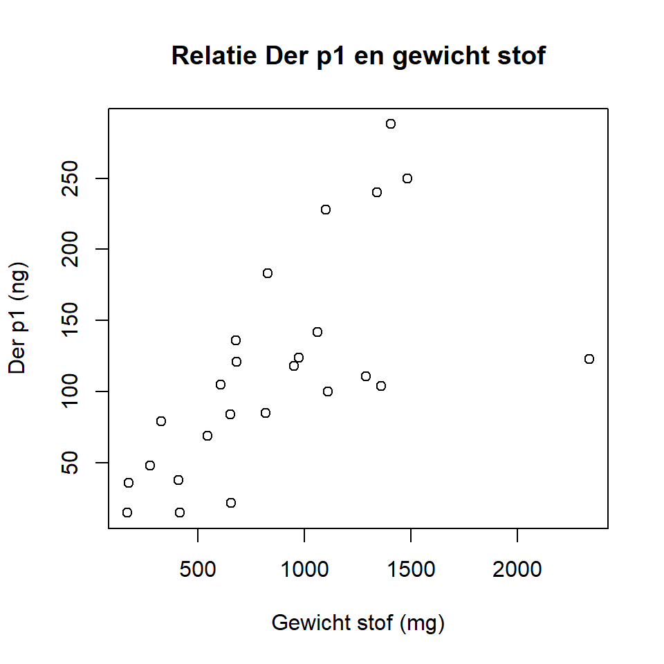
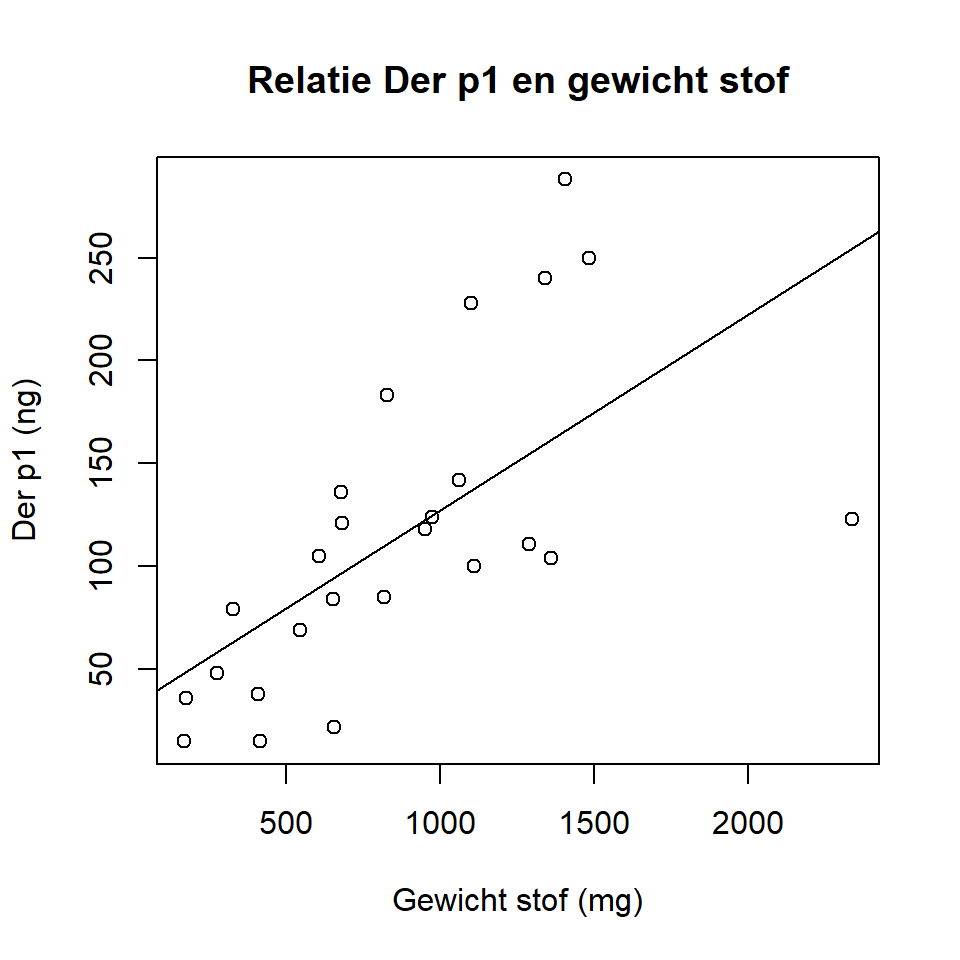
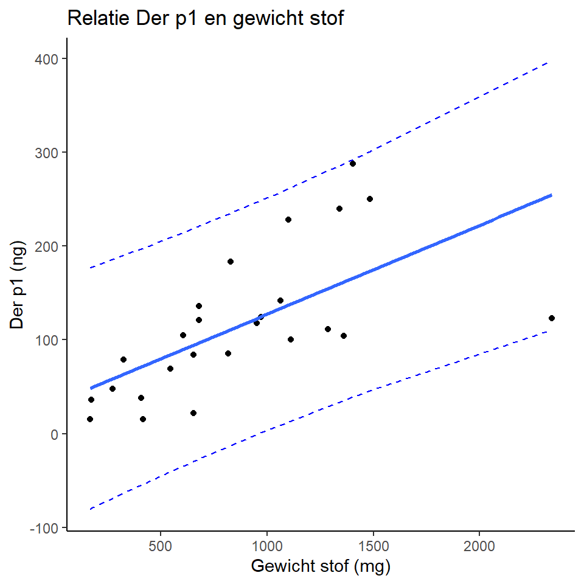

In dit COO leer je de coëfficiënten van een regressielijn schatten in R, een spreidingsdiagram met regressielijn maken, en predictieintervallen laten tekenen rondom een regressielijn en een ijklijn.
Zorg er voor dat je de benodigde databestanden hebt gedownload en lokaal hebt opgeslagen:
Het is ook handig om je ‘working directory’ te veranderen in deze map met databestanden. Dit kun je doen via het menu: Session > Set Working Directory > Choose Directory… > selecteer de map waarin de databestanden staan. Let op tijdens het instellen van je ‘working directory’ zie je de bestanden meestal niet staan.
Verder maken we gebruik van functies uit de packages
ggplot2 en investr. Als je die nog niet hebt
geïnstalleerd, doe dat nu met de functie
install.packages(c("ggplot2", "investr")). Daarna kunnen we
ze inladen:
library(ggplot2)
library(investr)Er is in de afgelopen 15-20 jaar veel onderzoek uitgevoerd naar de invloed van de woonomgeving op de ontwikkeling en ernst van astma. Omdat een groot deel van alle astmapatiënten positief reageert in type I allergie tests voor huisstofmijten, wordt onder andere veelvuldig gekeken naar de concentraties in huisstof van hun zgn. ‘major allergens’ – eiwitten waaraan het IgE van de meeste mijt-allergische patiënten zich specifiek bindt. Er zijn in NW en Midden-Europa in ieder geval twee veel voorkomende huisstofmijtsoorten: Dermatophagoides pteronyssinus en Dermatophagoides farinae, waarvan de major allergens Der p1 en Der f1 elk afzonderlijk specifiek kunnen worden gemeten in extracten van huisstof. Allergeen hoeveelheden in huisstofmonsters worden meestal opgegeven in ng per m2 bemonsterd oppervlak, of in relatieve concentraties, dat wil zeggen in ng allergeen per mg huisstof.
In deze opdracht hebben we de beschikking over een selectie van resultaten uit een in 2000-2004 uitgevoerde studie onder Deense schoolkinderen (DAMIB), bij wie onder andere matrasstofmonsters zijn geanalyseerd. Bij elk kind werd gedurende 2 minuten stof gezogen van het volledige oppervlak van het matras, waarbij het opgezogen stof werd verzameld op een filter.
De variabele Stof geeft het gewicht van het aldus
verzamelde stof (in mg), en de variabelen Derp1 en
Derf1 geven de totale hoeveelheden van Der p1 en Der f1 (in
ng), respectievelijk, die met immunoassays in het extract van het stof
gemeten werden.
De onderzoekers zijn vooral geïnteresseerd in het effect van de hoeveelheid stof op de hoeveelheid allergenen. Hier kijken we naar naar Der p1.
We beginnen met het inlezen van het bestand en dat bekijken. We lezen
de data in en noemen de data frame d1. We bekijken de
eerste regels met head:
d1 <-read.csv("huisstof.csv")head(d1)## Monsterno Stof Derp1 Derf1
## 1 111 679 136 4803
## 2 202 173 36 169
## 3 207 166 15 165
## 4 211 828 183 6914
## 5 214 1340 240 9690
## 6 303 1062 142 183Nu gaan we een spreidingsdiagram maken van de data. Dat kan via base
R, met de functie plot of we kunnen mooiere plaatjes maken
met behulp van de functies in de package ggplot2. We
beginnen met base R.
plot(d1$Derp1 ~ d1$Stof)Dit kan natuurlijk mooier, met labels op de assen enz. Probeer bijvoorbeeld:
plot(d1$Derp1 ~ d1$Stof, xlab = "Gewicht stof (mg)", ylab = "Der p1 (ng)", main = "Relatie Der p1 en gewicht stof")
Ben je verder tevreden met de plot? Denk aan de range van de assen,
bijvoorbeeld? Probeer de x-as te laten lopen vanaf 0 met de
xlim= optie.
Vraag 1a. Beschrijf de relatie tussen Der p1 en de hoeveelheid stof verzameld. Is er een verband? Zo ja, wat voor verband? (Denk aan vorm, sterkte en richting.)
We gaan uit van een (redelijk) lineair verband. Om het lineair model
te schatten, gebruiken we de functie lm(). Gebruik de help
functie van R om daar meer over te leren. We slaan het model op als een
object; op die manier kunnen we de informatie uit het model gebruiken
(bijvoorbeeld om toe te voegen aan de spreidingsdiagram). We noemen het
object lm.dp. Om de vergelijking van de lijn te krijgen, moeten we
vragen om de summary() van het model:
lm.dp <- lm(Derp1 ~ Stof, data = d1)
summary(lm.dp)##
## Call:
## lm(formula = Derp1 ~ Stof, data = d1)
##
## Residuals:
## Min 1Q Median 3Q Max
## -131.46 -33.18 -10.33 23.95 122.26
##
## Coefficients:
## Estimate Std. Error t value Pr(>|t|)
## (Intercept) 32.42929 23.80791 1.362 0.186351
## Stof 0.09488 0.02392 3.966 0.000612 ***
## ---
## Signif. codes: 0 '***' 0.001 '**' 0.01 '*' 0.05 '.' 0.1 ' ' 1
##
## Residual standard error: 58.73 on 23 degrees of freedom
## Multiple R-squared: 0.4061, Adjusted R-squared: 0.3803
## F-statistic: 15.73 on 1 and 23 DF, p-value: 0.0006122Vraag 1b. Stel de vergelijking van de lijn op op basis van de uitdraai.
Vraag 1c. Wat is de voorspelde waarde van de hoeveelheid Der p1 in een monster wanneer de hoeveelheid stof gelijk is aan 1000 mg?
Vraag 1d. Wat is de correlatie van Der p1 met Stof?
Omdat de grafiek nog ‘open’ staat in R (tot we een nieuwe grafiek
maken, of dev.off() gebruiken om de grafiek te sluiten),
kunnen we nog dingen toevoegen aan de grafiek, zoals nieuwe punten (die
hebben we niet), tekst (‘annotation’) of lijnen. We voegen een lijn toe
op basis van de regressielijn, die in het object lm.dp
zit.
abline(reg = lm.dp)
In dit thema zijn we vooral geïnteresseerd in predictieintervallen,
dus is het makkelijkst om gebruik te maken van de plotFit
functie van de investr package.
plotFit(lm.dp, interval = "prediction", shade = TRUE, col.pred = "lightblue",
extend.range = FALSE)Vraag 1e. Wat is (ongeveer) het predictieinterval voor de voorspelde hoeveelheid Der p1 in een monster wanneer de hoeveelheid stof gelijk is aan 1000 mg? Probeer dit van de grafiek af te lezen.
Vraag 1f (optioneel). Als je extra wilt oefenen, kun je de stappen hierboven herhalven met Der f1.
Om te kijken naar het betrouwbaarheidsinterval en het predictieinterval van de lijn moeten we die intervallen laten uitrekenen en opslaan in een object en die vervolgens ook toevoegen aan de plot.
We kijken eerst naar het minimum en maximum van de x-variabele, en maken een nieuwe vector met veel waarden tussen die twee in, vervolgens vragen we om voorspellingen met betrouwbaarheidsinterval of predictieinterval. Die intervallen voegen we toe aan plot.
min(d1$Stof)## [1] 166max(d1$Stof)## [1] 2340newx <- seq(0, 2500, by = 5)
conf_interval <- predict(lm.dp, newdata = data.frame(Stof = newx), interval = "confidence",
level = 0.95)
pred_interval <- predict(lm.dp, newdata = data.frame(Stof = newx), interval = "prediction",
level = 0.95)
lines(newx, conf_interval[,2], col = "blue", lty = 2)
lines(newx, conf_interval[,3], col = "blue", lty = 2)
lines(newx, pred_interval[,2], col = "orange", lty = 2)
lines(newx, pred_interval[,3], col = "orange", lty = 2)Gebruik van ggplot2 helpt bij het plotten van een
regressielijn met betrouwbaarheidsinterval, maar een predictieinterval
moeten we nog altijd zelf toevoegen. We definiëren eerst het object
p.dp, een plot van Der p1 tegenover stof. We voegen
vervolgens langzaam elementen toe aan de plot. Hier laten we alleen de
laatste versie van de plot zien, maar we raden je aan om elke stap
(aangegeven hieronder met dubbele hashtag) apart te doen, dan zie je wat
de aparte elementen doen. Om de scatterplot te krijgen:
p.dp <- ggplot(data = d1, aes(x = Stof, y = Derp1))
## p.dp + geom_point()
## p.dp + geom_point() +
## labs(title = "Relatie Der p1 en gewicht stof", x = "Gewicht stof (mg)", y = "Der p1 (ng)")
## p.dp + geom_point() +
## labs(title = "Relatie Der p1 en gewicht stof", x = "Gewicht stof (mg)", y = "Der p1 (ng)") +
## theme_classic()
## p.dp + geom_point() +
## labs(title = "Relatie Der p1 en gewicht stof met BHI lijn", x = "Gewicht stof (mg)", y = "Der p1 (ng)") +
## theme_classic() +
## geom_smooth(method = "lm", se = FALSE)
p.dp + geom_point() +
labs(title = "Relatie Der p1 en gewicht stof met BHI lijn", x = "Gewicht stof (mg)", y = "Der p1 (ng)") +
theme_classic() +
geom_smooth(method = "lm", se = TRUE)## `geom_smooth()` using formula 'y ~ x'Wanneer we een predictieinterval willen toevoegen, moeten we dezelfde stappen volgen als bij de plot in base R hierboven: eerst een nieuwe x variabele aanmaken met veel waarden tussen het minimum en maximum van x = Stof, dan de twee intervallen uit laten rekenen en opslaan, en dan toevoegen aan de plot. Sterker nog, er volgt nog een stap: we moeten het predictieinterval uit laten rekenen voor alle data punten in de data frame, en die toevoegen aan de data frame. Op die manier wordt het best omslachtig:
tmp.var <- predict(lm.dp, interval = "prediction")
newd1 <- cbind(d1, tmp.var)
p.dp2 <- ggplot(data = newd1, aes(x = Stof, y = Derp1))
p.dp2 + geom_point() +
labs(title = "Relatie Der p1 en gewicht stof", x = "Gewicht stof (mg)", y = "Der p1 (ng)") +
theme_classic() +
geom_smooth(method = "lm", se=FALSE) +
geom_line(aes(y = lwr), color = "blue", linetype = "dashed") +
geom_line(aes(y = upr), color = "blue", linetype = "dashed")## `geom_smooth()` using formula 'y ~ x'
Neurowetenschappers hebben onderzocht in welke mate het volume van de
hersenen (NWBV = Normalized Whole Brain Volume, bepaald met MRI en
gegeven als een fractie van de intracraniale volume) de concentratie van
een eiwit in de cerebrospinale vloeistof, (CSF tau in pg/ml) voorspelt
in 29 personen met een milde vorm van de ziekte van Alzheimer. De data
kun je vinden in het bestand CSFdata.csv. Lees de data in
en bekijk de eerste 6 regels met de head() functie:
d2 <-read.csv("CSFdata.csv")head(d2)## CSFtau NWBV
## 1 1196 0.668
## 2 1365 0.697
## 3 926 0.689
## 4 824 0.703
## 5 757 0.684
## 6 561 0.681Bron: Fagan AM et al. Decreased cerebrospinal fluid Aβ42 correlates with brain atrophy in cognitively normal elderly Annals of Neurology. 2009; 65:176-183 De data zijn geschat uit figuur 2c.
Vraag 2a. Maak een spreidingsdiagram (met aandacht voor de x- en y-assen, inclusief labels) van deze data. Gezien de vraagstelling, welke variabele hoort op de x-as en welke op de y-as?
Vraag 2b. Beschrijf de relatie tussen de twee variabelen (denk aan vorm, sterkte en richting).
Vraag 2c. Bereken de coëfficiënten voor de regressielijn en stel de vergelijking van de lijn op.
Vraag 2d. Voeg de regressielijn toe aan de spreidingsdiagram uit 2a.
Vraag 2e. Aan de hand va de vergelijking van de regressielijn, geef een voorspelling van de gemiddelde CSF-tau concentratie voor mensen met milde Alzheimer die een NWBV van 0.7 en 0.75 hebben.
We gebruiken hier de data van de zelfstudie: een kalibratielijn
opgesteld d.m.v. UV spectrofotometrie (absorptie bij 260 nm) met bekende
concentraties zalm sperma DNA. De data voor de kalibratielijn staan in
het bestand zalmDNAconcabs.csv. We lezen het bestand in,
noemen de data frame d3, en bekijken de data:
d3 <-read.csv("zalmDNAconcabs.csv")d3## abs dna
## 1 0.001 0.000
## 2 0.025 0.025
## 3 0.035 0.040
## 4 0.060 0.050
## 5 0.068 0.060
## 6 0.145 0.100
## 7 0.175 0.140
## 8 0.220 0.175
## 9 0.275 0.200
## 10 0.340 0.275Bron: Almalik A. et al. Hyaluronic acid-coated chitosan nanoparticles: Molecular weight-dependent effects on morphology and hyaluronic acid presentation. Journal of Controlled Release. 2013; 172:1142–1150. De data zijn (op het oog) geschat uit figuur S3.
Vraag 3a. Maak een spreidingsdiagram (met aandacht voor de x- en y-assen, inclusief labels) van deze data. Welke variabele hoort op de x-as en welke op de y-as?
Vraag 3b. Schat de ijklijn en voeg deze toe aan de plot.
Vraag 3c. De R2 van deze lijn is natuurlijk veel hoger dan de voorgaande voorbeelden. Hoe komt dat?
Vraag 3d. Een onbekend monster geeft een absorptie van 0.20. Wat is de op basis van de ijklijn geschatte concentratie DNA in het monster? Reken dit uit, schat het niet alleen af uit de plot. Hoe nauwkeurig denk je dat deze schatting is?
Vraag 3e. Gebruik de plotFit functie om de
predictieintervallen rondom de ijklijn te plotten. Je kunt jouw plot
vergelijken met die in de kennisclip over kalibratielijnen.
Vraag 3f. Gebruik de invest() functie (tip:
gebruik de help functie!) uit de investr package om je
voorspelling uit 3d te checken, en om predictieinterval rondom die
voorspelling te krijgen. Interpreteer dit interval. Voor het type
interval mag je de default gebruiken.
Vraag 3g. Interpreteer het interval uit 3e.